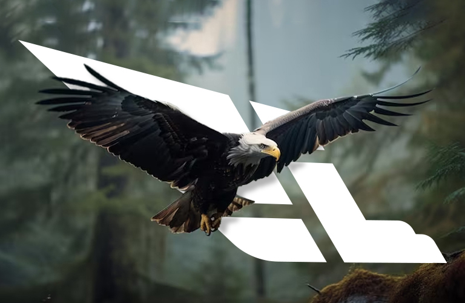

Incorporated in March 2025, EIL Arms and Ammunition Limited (EAAL) is a premier defence manufacturing firm dedicated to strengthening India’s strategic autonomy.
As a powerful subsidiary of Eagle Infra India Limited and Inderdeep Infra India Limited, we bridge the gap between world-class engineering and advanced defence production.

In a landmark commitment to national security, EIL has signed a Memorandum of Understanding (MoU) with the Indian Army. Under the Aatmanirbhar Bharat initiative, EIL stands as a trusted strategic partner ready to deliver critical defence requirements as and when required, ensuring the nation’s armed forces are equipped with indigenous, high-performance technology.
We are currently developing a state-of-the-art defence ecosystem on 40 acres of land in Shamshabad, KV Rangareddy, Telangana.
Precision manufacturing of small, medium and high-calibre defence hardware and ballistics.
A dedicated wing for the manufacturing, development and testing of next-generation Unmanned Aerial Vehicles.
To become a leading provider of high-quality, indigenous defense solutions that enhance national security and self-reliance in the arms and ammunition sector.
Engineering indigenous solutions with a focus on quality, reliability, innovation and national self-reliance.